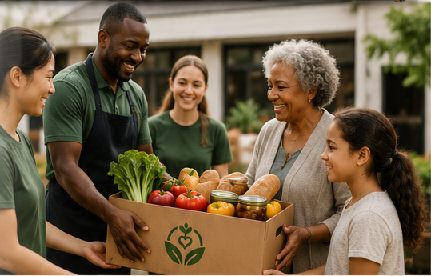

01
Share surplus food
For grocery stores, bakeries, restaurants, farms, and other eligible food businesses.
Share safe surplus with community organisations that can put it to use.
Whether you’re sharing surplus food, helping connect food with your community, or volunteering your time, Nourish & Share gives you a way to take part.
Find your place
Three ways to join one shared effort: helping good food reach communities instead of going to waste.
For grocery stores, bakeries, restaurants, farms, and other eligible food businesses.
Share safe surplus with community organisations that can put it to use.
For food pantries, shelters, community organisations, and other eligible recipients.
Discover available food and respond in time to serve your community.

For people who want to support the Nourish & Share network.
Contribute your time and skills to help strengthen food redistribution in your community.
Already part of the network?
Log in